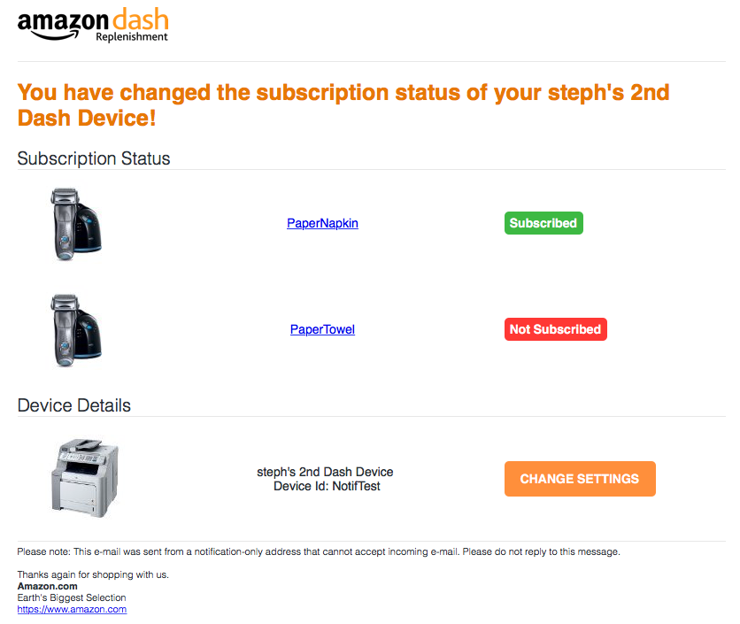
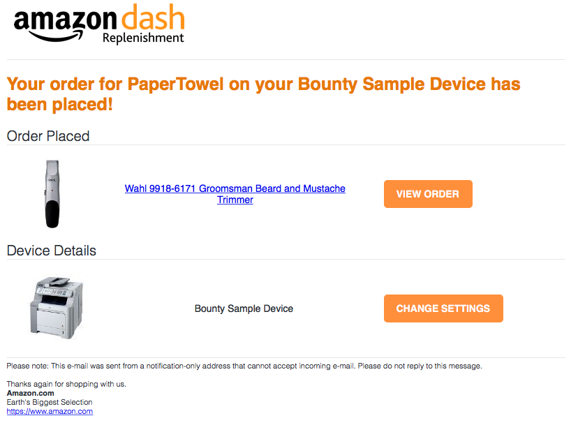
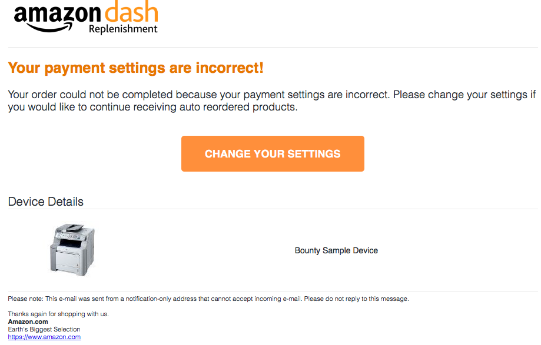

Problem: Customer had no feedback on various actions they would take on their DRS devices. For example when the customer registered, changed their status, or encountered various problems (no payment method set, ect), they would have no confirmation that any of these actions occured.
Goals: Give customers descriptive, easy to digest, and comprehensive knowledge of their devices. Make sure that customers get important messages to help them make more informed choices.
Solution: Create customer emails that notified the customer whenever they completed a significant action on their DRS devices.
My roles: Interface design, visual design, user research/testing, software development, systems design
Tools: Photoshop, HTML, CSS, email templating, Java
Project duration: 2 months
Features:
Subscription changed / registration
Order created
Deregistration
Error cases (incomplete payment, incomplete shipping/billing addresses, out of stock item, generic)
Initial requirements: The base requirements were to make an email each for when a user registers a device, when a user changes their subscription method for an item's auto-reorder functionality, when a user places an order, and various error cases the user could receive. One of the emails that was first given to me as a potential template was an email based on an existing Amazon service called Subscribe and Save (similar to DRS). It was an email that provided the same functionality that we wanted about items that were being reordered automatically. An example of one such email is below:
I did a first pass implementation following these guidelines.
However, I did not like these emails very much. In addition to these emails not being very pretty, the email itself was very dense and hard to read. There was
way too much text and it was not obvious which information was important. It was also hard to tell what actions to take upon receiving this email, or if any
actions were needed at all. I decided that this template was unacceptable for a user (this type of email would've gone straight to my spam folder). Because we did not have a UX designer for this project, I decided to tackle the challenge of designing an easier to read and better looking template.
User research: I began doing some research on what makes an email one you want to read, or one that goes into the trash. I talked to various people inside my team/Amazon (very technology savvy), and people outside Amazon who were not as technology savvy. Surprisingly there were very few differences. However one key difference was that in error cases, people that were more technology savvy seemed to have a better understanding of what the problem was/where to go to fix the problem. People with less experience seemed to sometimes get lost despite there being directions on what to do to fix the problem. This made me think that designing the error case emails should probably be a bit different/more specialized than the other emails, and should really focus on alerting the user to a problem, and providing them an unmissable target they could go to for help. Some common important things between the groups were:
Too busy to read most emails
Liked seeing pictures
Only scaned important titles and headers (didn't read small text)
Gravitated towards reading things that were colored
The longer the email, the less likely to read at all
I also did some research on various emails from different companies that I thought gave me information in concise and easy ways. I looked to see what I could learn from the layout of such emails, where they placed the text, how big the text was, where they placed key elements of the email, if/when/how they used colors, ect.
Based on what I had learned I created my initial improved prototype/designs. Some examples below:




Considerations I made while designing these:
Keep text as short as possible
Make font big so it's easier to digest
Make the most important statement 1 sentence, and make it a different color to indicate importance
Always use pictures instead of text when applicable
Keep important sections divded by obvious headers/spacing
Create items in formated rows and colums for more organized processing with a single glance
Use red and green colors to indicate good and bad states on the device
For error case emails, created a big button in the middle of the screen that would point to a resolution case
I released my emails on a small user group to see how users interacted with the emails and get some feedback. I let them go through the whole flow for various different cases (registration, error cases, ect), and recorded what their reaction to the emails were.
Pros
No one seemed to have trouble digesting the information
Lots of positive feedback about the "error case" emails - people just clicked the link and it redirected them to a place where they could fix their problem
Since each email was approx 3 sentences, everyone read the whole email
People read the email very quickly
Cons
A lot of people did not realize button was clickable
A lot of people thought the "subscribed" labels were clickable (fair point, since they were very similar to the other actually clickable buttons)
Didn't feel that the email was coming from Amazon
I included all of the previous feedback into my final design. Examples below.
I addressed the concerns from the previous testing as such:
Non clickable buttons: I used Amazon buttons instead of creating my own buttons. This killed two birds with 1 stone as it looked more like an Amazon email and also made sure the user knew exactly what was clickable and what was not.
Changed styling of the "suscribed" label to look less like a clickable item and more like a label (transparancey helps it look less "3d" and more like a sticker)
Changed a lot of the styling to coincide with Amazon's guidelines.
Made use of different color backgrounds to highlight the body of the email
Minimized white space for more professional looking email